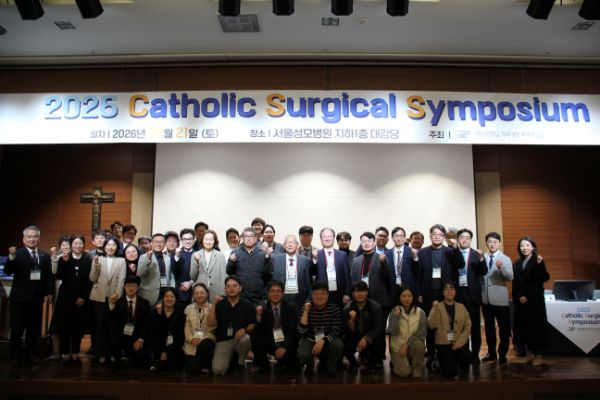

둘러보기
- 인사말: 주임교수 인사말
- 교실 소개: 교실 개요, 연혁, 역대 주임교수, 부속병원
- 분과와 교수진: 8개 분과의 진료 분야와 병원별 교수진
- 행사: Catholic Surgical Symposium 등 교실 행사의 사진과 일정
- 동문회: 외과동문회와 역대 동문회장
- 연락처: 외과학교실 사무실 주소와 전화
최근 행사

2026 Catholic Surgical Symposium
2026년 2월 21일(토) 서울성모병원 지하1층 대강당에서 열렸습니다. 심포지엄, 특별강연, 교수진 연구 발표, 비디오 세션이 이어졌습니다.
8개 분과
간담췌외과, 갑상선내분비외과, 대장항문외과, 소아외과, 위장관외과, 유방외과, 중환자외상외과, 혈관이식외과
8개 부속병원
서울성모병원, 여의도성모병원, 의정부성모병원, 부천성모병원, 은평성모병원, 인천성모병원, 성빈센트병원, 대전성모병원